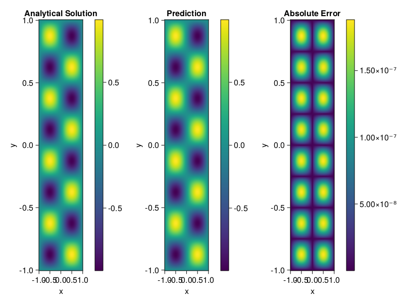

Helmholtz equation
Let us consider the Helmholtz equation in two space dimensions
\[\begin{aligned} &\Delta u(x, y)+k^{2} u(x, y)=q(x, y), \quad(x, y) \in \Omega:=(-1,1)^2 \\ &u(x, y)=0, \quad(x, y) \in \partial \Omega \end{aligned}\]
where
\[q(x, y)=-\left(a_{1} \pi\right)^{2} \sin \left(a_{1} \pi x\right) \sin \left(a_{2} \pi y\right)-\left(a_{2} \pi\right)^{2} \sin \left(a_{1} \pi x\right) \sin \left(a_{2} \pi y\right)+k^{2} \sin \left(a_{1} \pi x\right) \sin \left(a_{2} \pi y\right).\]
The excat solution is $u(x,y)=\sin{a_1\pi x}\sin{a_2\pi y}$. We chose $k=1, a_1 = 1$ and $a_2 = 4$.
using ModelingToolkit, IntervalSets, Sophon, Lux
using Optimization, OptimizationOptimJL
@parameters x,y
@variables u(..)
Dxx = Differential(x)^2
Dyy = Differential(y)^2
a1 = 1
a2 = 4
k = 1
q(x,y) = -(a1*π)^2 * sin(a1*π*x) * sin(a2*π*y) - (a2*π)^2 * sin(a1*π*x) * sin(a2*π*y) + k^2 * sin(a1*π*x) * sin(a2*π*y)
eq = Dxx(u(x,y)) + Dyy(u(x,y)) + k^2 * u(x,y) ~ q(x,y)
domains = [x ∈ Interval(-1,1), y ∈ Interval(-1,1)]
bcs = [u(-1,y) ~ 0, u(1,y) ~ 0, u(x, -1) ~ 0, u(x, 1) ~ 0]
@named helmholtz = PDESystem(eq, bcs, domains, [x,y], [u(x,y)])\[ \begin{align} \frac{\mathrm{d}^{2}}{\mathrm{d}x^{2}} u\left( x, y \right) + \frac{\mathrm{d}^{2}}{\mathrm{d}y^{2}} u\left( x, y \right) + u\left( x, y \right) =& - 166.7832748185191 \sin\left( 3.141592653589793 x \right) \sin\left( 12.566370614359172 y \right) \end{align} \]
Note that the boundary conditions are compatible with periocity, which allows us to apply BACON.
chain = BACON(2, 1, 5, 2; hidden_dims = 32, num_layers=5)
pinn = PINN(chain) # call `gpu` on it if you want to use gpu
sampler = QuasiRandomSampler(300, 100)
strategy = NonAdaptiveTraining()
prob = Sophon.discretize(helmholtz, pinn, sampler, strategy)
@time res = Optimization.solve(prob, BFGS(); maxiters=1000)u: ComponentVector{Float64}(filters = (filter_1 = (bias = [-0.7160796454780515; -0.3134503419411254; … ; 0.8292268061803619; -0.15301369827918812;;]), filter_2 = (bias = [0.6862416699422531; 0.8214314369635111; … ; 0.9429490468252654; 0.3327896387261397;;]), filter_3 = (bias = [-0.8604232044197362; -0.8561584790251057; … ; 0.6640174626950048; -0.46617663721598385;;]), filter_4 = (bias = [-0.4718570764198012; -1.1981516213106433; … ; 0.405031159560131; 0.06628495808496246;;]), filter_5 = (bias = [-0.8935045616908455; 0.29042325159829324; … ; 0.936923225416943; 0.41171248143752714;;])), linear_layers = (layer_1 = (weight = [0.2839962679464323 -0.06628448612667026 … 0.12095913567749766 0.44681408325781474; 0.3278155512010874 -0.08036379107220146 … -0.16268622019974832 -0.1916201595600735; … ; 0.1055805744426334 0.23572026473021057 … -0.0823774280968009 -0.38417855847683263; 0.14206345691401578 -0.08485144916983181 … -0.3517447151182775 0.2954702963877544], bias = [-0.008125825190926268; -0.009950238443315638; … ; -0.0036600401493280046; -0.03950903058811135;;]), layer_2 = (weight = [0.37708684302018236 -0.11989246709702604 … 0.0862462436560657 -0.2742177509141849; -0.01109915894434042 -0.25662637648284975 … -0.4126792553324556 -0.4264556417514141; … ; 0.0533363482279807 0.049226578127048067 … -0.13961660562688066 -0.2422911197604895; -0.18783597253859502 0.2435906863995391 … 0.21810294627667967 -0.026081382625094126], bias = [0.004831005764349312; -0.020611949256163033; … ; -0.0044828282790813955; -0.017924461775824997;;]), layer_3 = (weight = [0.08585876041778255 -0.328726785028307 … -0.32301285749706193 -0.17598241103582693; -0.14763941270006364 0.258484826774082 … 0.471553845442092 0.1448906237729125; … ; 0.36536980525309465 -0.3624988460127847 … 0.111958101953478 -0.3810968069099702; 0.3704358212718281 0.19472854864739494 … 0.11879424265838778 0.20401450945375907], bias = [-0.008572078861084673; 0.03407034038325494; … ; -0.006270743672996957; 0.009642974968025656;;]), layer_4 = (weight = [0.2662493258274209 0.16727003561067896 … -0.19945275366319742 -0.12384373759459147; 0.3043423915489817 0.13566891492462468 … 0.07495818794906144 -0.42995856162972135; … ; 0.2945818296799418 0.07547200197880764 … 0.2553454018763551 0.05641416813161725; 0.3134308494561802 0.1574149064855738 … -0.20273680209904793 -0.20055165951134862], bias = [-0.0020972576521313046; -0.00460687220527817; … ; 0.0019835801737158733; -0.004990250985442836;;])), output_layer = (weight = [0.2903753550961158 0.029507761120132318 … 0.05250001648051823 0.34085560855831376], bias = [0.020648984030454034;;]))Let's plot the result.
phi = pinn.phi
xs, ys= [infimum(d.domain):0.01:supremum(d.domain) for d in domains]
u_analytic(x,y) = sinpi(a1*x)*sinpi(a2*y)
u_real = [u_analytic(x,y) for x in xs, y in ys]
phi_cpu = cpu(phi) # in case you are using GPU
ps_cpu = cpu(res.u)
u_pred = [sum(phi_cpu(([x,y]), ps_cpu)) for x in xs, y in ys]
using CairoMakie
axis = (xlabel="x", ylabel="y", title="Analytical Solution")
fig, ax1, hm1 = heatmap(xs, ys, u_real, axis=axis)
Colorbar(fig[:, end+1], hm1)
ax2, hm2= heatmap(fig[1, end+1], xs, ys, u_pred, axis= merge(axis, (;title = "Prediction")))
Colorbar(fig[:, end+1], hm2)
ax3, hm3 = heatmap(fig[1, end+1], xs, ys, abs.(u_pred-u_real), axis= merge(axis, (;title = "Absolute Error")))
Colorbar(fig[:, end+1], hm3)
fig